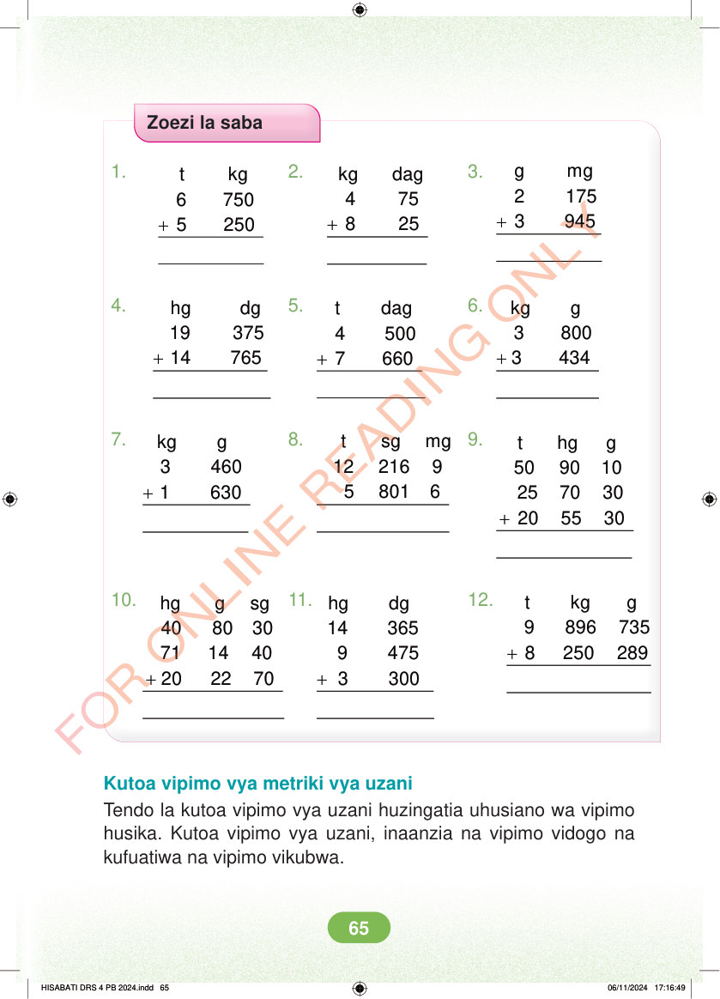

Zoezi la saba 1. 2. 3. + g mg 2 175 3 945 + + kg dag 4 75 8 25 t kg 6 750 5 250 4. 5. 6. + + + hg dg 19 375 14 765 kg g 3 800 3 434 t dag 4 500 7 660 7. 9. + 8. t sg mg 12 216 9 5 801 6 kg g 3 460 1 630 + t hg g 50 90 10 25 70 30 20 55 30 10. 11. 12. + t kg g 9 896 735 8 250 289 + + hg g sg 40 80 30 71 14 40 20 22 70 hg dg 14 365 9 475 3 300 Kutoa vipimo vya metriki vya uzani Tendo la kutoa vipimo vya uzani huzingatia uhusiano wa vipimo husika. Kutoa vipimo vya uzani, inaanzia na vipimo vidogo na kufuatiwa na vipimo vikubwa. HISABATI DRS 4 PB 2024.indd 65 HISABATI DRS 4 PB 2024.indd 65 06/11/2024 17:16:49 06/11/2024 17:16:49